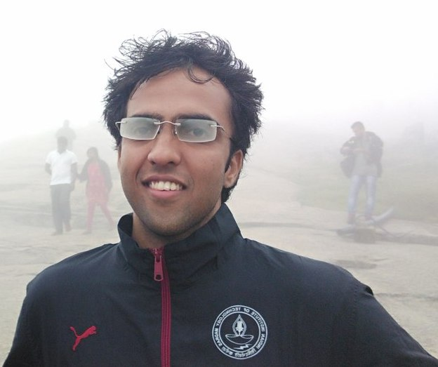

|  | About MeI am a second year PhD student in the ECE department at Cornell University, jointly advised by Jayadev Acharya and Aaron Wagner . Before coming to Cornell, I graduated with a BTech and MTech in Electrical Engineering from IIT Madras and was fortunate to be advised by Andrew Thangaraj. ContactEmail : snb62(at)cornell(dot)edu |
Jayadev Acharya, Sourbh Bhadane, Piotr Indyk, Ziteng Sun, “Entropy Estimation of Distributions in Constant Space”, Advances in Neural Information Processing Systems 32, (NeurIPS 2019), 2019
Sourbh Bhadane, Andrew Thangaraj, “Unequal Locality and Recovery for Locally Recoverable Codes with Availability”, Twenty-third National Conference on Communications, 2017
Akshay Gulati, Sourbh Bhadane, Joseph Samuel, Harishankar Ramachandran, R David Koilpillai, “IITMSAT : Innovative Packet Protocol and Concept of Operations”, AIAA Conference on Small Satellites, 2016 [Poster]
Jagdish M. Mevada, Joseph Samuel, Sourbh Bhadane, Akshay K. Gulati, R.D Koilpillai, “Design and Implementation of a Robust Downlink Communication System for Nanosatellites”, IEEE International Conference on Small Satellites (Iconspace), 2015, pp.164-169, 10-12 Aug 2015 [PDF]